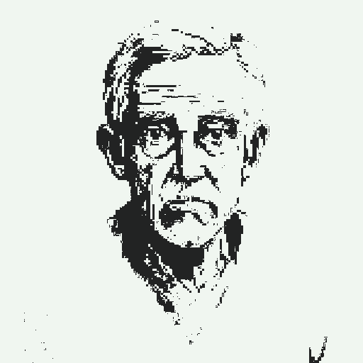
CHARACTER 01
レマルク REMARQUE
傍受・盗聴で名を馳せた指揮官。退役後に健康を害し、病床に伏したまま孫に自らの戦争を語る。この物語の語り手。
INDEPENDENT GAME STUDIO — SOLO DEVELOPED
We grow stories in the dark.
植物とゲームを愛するソロ開発者キム・シジュンのインディーゲームスタジオです。一粒の種が闇の中で芽吹くように、小さなアイデアを深い世界へと育てます。
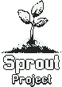
スプラウトスタジオは、植物とゲームを愛するソロ開発者キム・シジュンの作業場です。一粒の種が闇の中で芽吹くように、小さなアイデアを深い世界へ育てることに没頭しています。
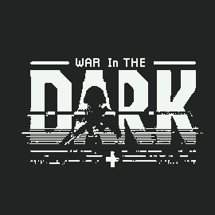
1950年代の架空の戦争を舞台に、敵のモールス信号を傍受して友軍を指揮する1-bitターン制傍受シミュレーション。単なる戦闘ではなく、闇の中の情報戦の緊張を自ら解読する体験です。
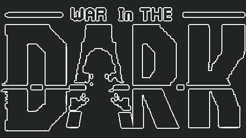
トレーラーを再生（YouTube）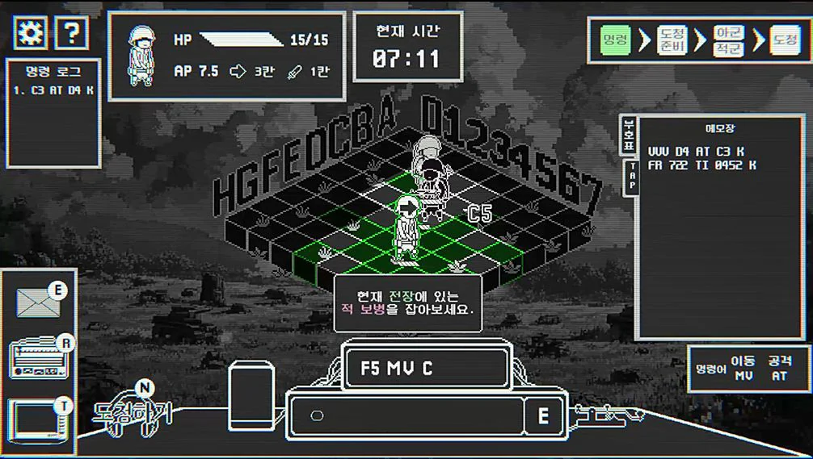
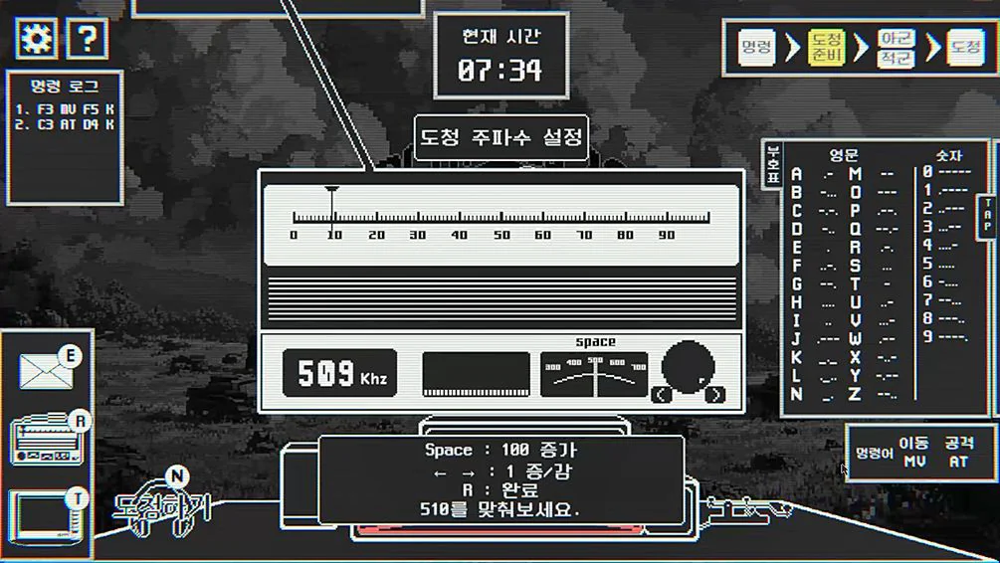
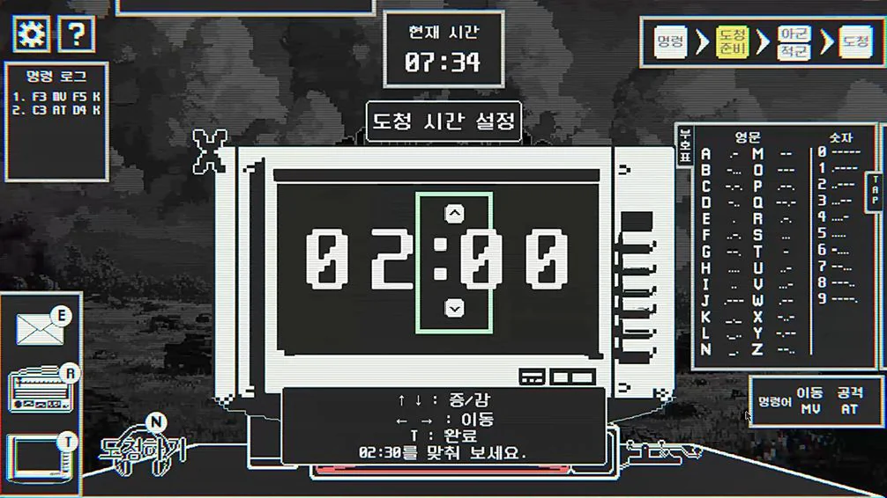
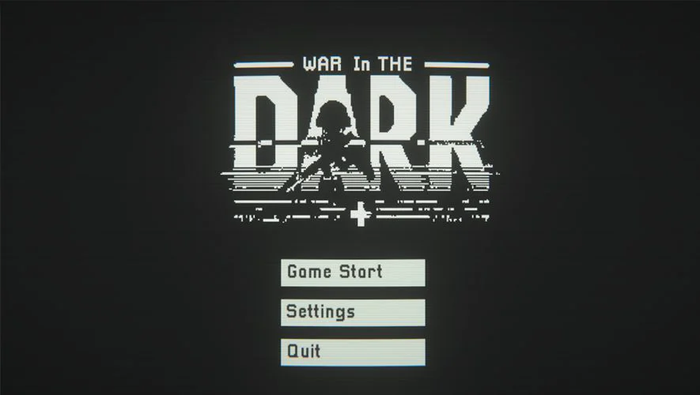
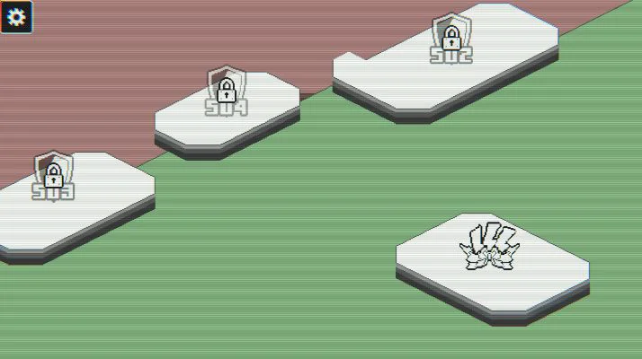
老兵レマルクは病床に横たわっている。孫のアンダーソンが持ってきた軍隊時代の色あせた写真一枚。その写真は、傍受と盗聴で名を馳せた指揮官時代の記憶を呼び起こす。孫に戦争の話を語る回想の中で、すべては彼が前線の第5歩兵師団に初めて配属された日から再び始まる。
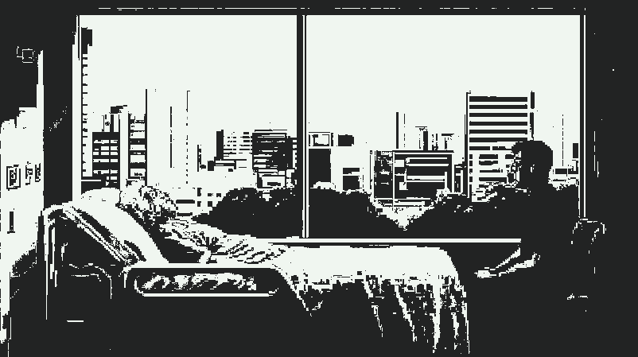

CHARACTER 01
傍受・盗聴で名を馳せた指揮官。退役後に健康を害し、病床に伏したまま孫に自らの戦争を語る。この物語の語り手。
CHARACTER 02
レマルクの孫。祖父の軍隊の話に興味を持って耳を傾ける聞き手。回想の扉を開く人物。
CHARACTER 03
第109歩兵師団の准尉。実戦が初めてのレマルク少佐が戦場に適応できるよう、傍らで支えた人物。
傍受が始まると、復号機が敵のモールス符号を一文字ずつ文字に変換する。プレイヤーはTapで変換内容を自ら書き取る。
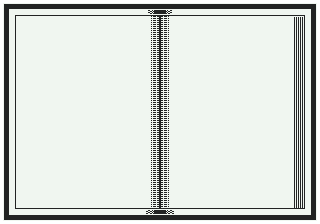
収集した傍受内容を解析し、敵の次の行動、交信時間、周波数を読み取る。
解析した情報をもとに、モールス符号表を見ながら命令を送信する。友軍ユニットを移動させたり、攻撃命令を出したりする。
次の傍受のため、周波数と時間をラジオと時計に入力する。間違えると傍受は失敗し、逃した情報は諜報欄で一部しか確認できない。
下の電鍵（キー）を選択し、Spaceを短く押すと短点（·）、長く押すと長点（−）になります。少し間を置くと文字が解読されます。マウスやタッチでも押せます。目標：SOS（··· −−− ···）
SIGNAL
DECODED
この体験にはJavaScriptが必要です。下のモールス符号表はそのまま見られます。
FEATURE 01
単なる戦闘中心のプレイから離れ、情報戦の重要性を強調します。信号を素早く正確に解読して敵の意図をつかみ、地上部隊を効率よく統制する必要があります。
FEATURE 02
友軍の命令と敵の傍受は、平文ではなくモールス符号という暗号化された形で進行します。見慣れない情報形式を自ら解読する強烈な快感を味わえます。
FEATURE 03
わずか二色（#222323 · #F0F6F0）のピクセルアートで、シンプルながら強烈なコントラストを実現しました。モノクロの戦場が、戦争特有の緊迫感と冷たさを伝えます。
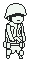
広い範囲を探索し、敵の位置把握に有利。
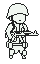
高い体力で敵との長期戦に有利。
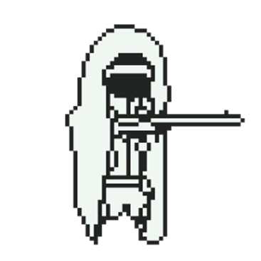
上下左右の遠距離射撃に特化。体力は低い。
最終更新 2026.11 · 日程は開発状況により変わる場合があります。未確定の項目はTBDと表記しています。
安定化とフィードバック収集 — パッチによるバグ修正とバランス調整。
新規ステージ制作 — ステージ3・4・5のストーリーとメカニクスの実装。
第1次CBT（クローズドベータテスト）。
兵力システム拡張 — 特殊部隊・衛生兵など特殊兵科の特性・ステータス・外見の開発。
追加コンテンツ開発 — 練習モード、無限モードなど多様なモードと難易度。第2次CBT予定。
The final mission begins. 完成版のSteam発売とグローバル展開。発売目標は2027年9月です。
War In The Darkは、1950年代の架空の戦争を舞台にした1-bitターン制傍受シミュレーションです。プレイヤーは敵のモールス信号を傍受・解析し、モールス符号で命令を送信して友軍を指揮します。わずか二色（#222323 · #F0F6F0）のピクセルアートが情報戦の緊張感を伝えます。
スプラウトスタジオは、植物とゲームを愛するソロ開発者キム・シジュンのインディーゲームスタジオです。War In The Darkは全北インディーゲーム公募展優秀賞、ソウル SBA × スーパーヴィランラボ ゲームコンテスト優秀賞、Play X4 IndieSeed Challenge IR Pitching 2位、インディクラフト「チャレンジャー部門」優秀賞（城南産業振興院長賞）、GIGDC 2026 大学部 制作部門 銀賞（韓国ゲーム開発者協会長賞）、第21回 京畿ゲームオーディション 学生部門 2位を受賞しました。